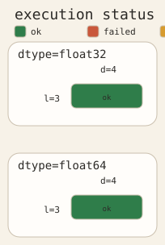
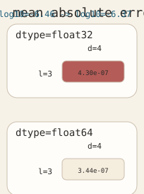
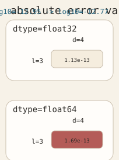
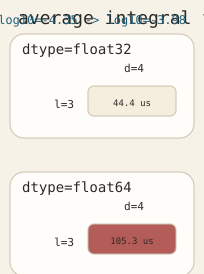
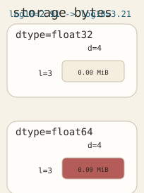
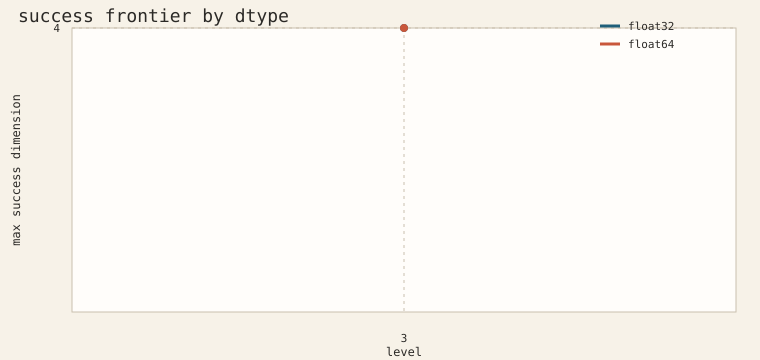

legend

| experiment | smolyak_scaling_benchmark |
|---|---|
| started_at_utc | 2026-03-15T13:31:58.586374+00:00 |
| platform | cpu |
| num_cases | 2 |
| num_repeats | 5 |
| num_accuracy_problems | 5 |
| dtypes | float32, float64 |





